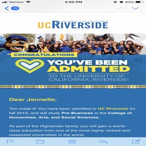

Jennelle Serna
Hello, I am Jennelle Serna. I am currently a first year business major at the University of California Riverside.I aspire to concentrate in marketing and eventually work my way up to work for a large corporation like Disney or Nike.I hope to be apart of a collabarative team that works hard to climb up the business ladder.Working hard and learning at the same time is very important. I am known to be a very determined and hard worker. I get things done the best way I can and try my best to never give up, even when I am feeling defeated.
Business is not an easy major, and I know it is going to take alot of determination and hard work to get where I want to be. As I try to make my up the business ladder, I think it is important to also work socially. Beginning in high school I knew you had to meet people to form realtionships with your peers. I was president of Chicanos Unidos, and a participant of Key CLub, California Scholarship Federation, RHO KAPPA, and National Honor Society. I knew from an early age, that no one but yourslef gets you to where you need to be, and I feel as if that has set me up to be in the business field. It is vital career wise to form those relationships and create an atmosphere that is not toxic.
Entering UCR was a somewhat scary experience as I have grown up in the same town since I was 2, so this change was very big for me. Although adjusting was difficult, I knew I would have to put myself out there and start my plans early. I joined greek life during week 2 of fall quarter and it definetly has helped me become a less shy person. It has given me the opportuity to speak with my fellow pears and discuss their own business path. It has helped me gain perspective of the business path, and I have been able to gain adive from some very nice people. Being surrounded by people of all grades has impacted me in such a positive way, as I can gain such a diverse perspective. Overall it is important to put yourself out there, and prepare yourself for the next phase in your life.As my sophmore year comes close, I hope to further my networking skills and ask more quesitons and be even more informed.
Experience
Club Leader
• Organized club events for Chicanos Unidos X
• Gave Speeches on unity
• Experince with Word and EXCEL
Blood Drive
•Helped guide people in the process of donating blood
• Helped people fill out forms
CSF
• Christmas Toy Drive
• Organize events that contribute to those who are less fortunate
• Tutoring
• Contribute in after school activities
Education
UC Riverside
Portfolio

.jpg)
.jpg)
.png)